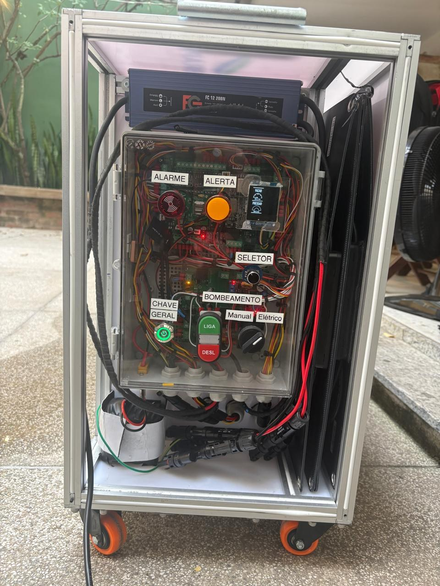
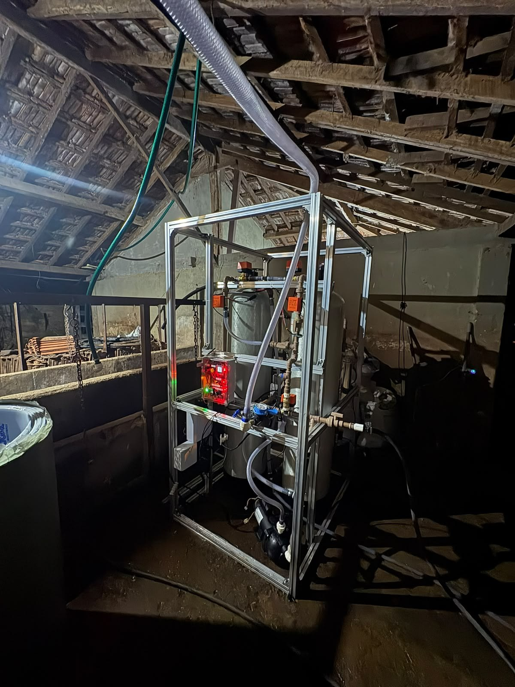
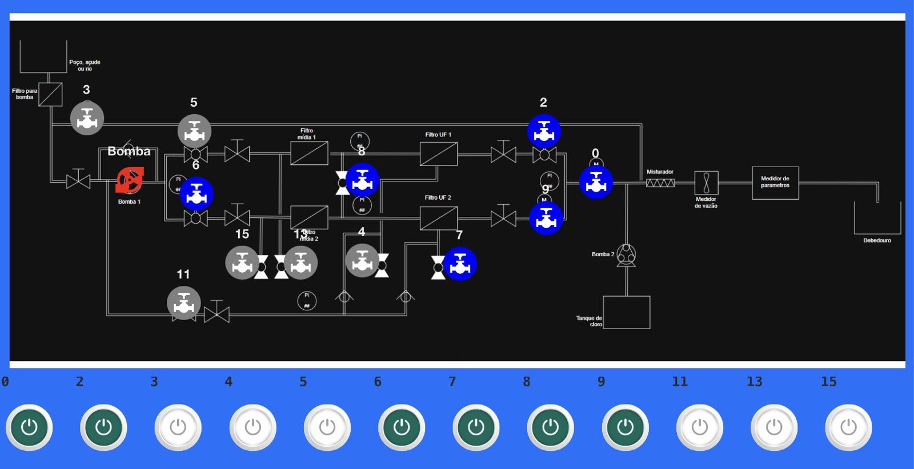

Wara Tech · Documento técnico
Yara Box,
versão de campo
Controle, firmware, telemetria e lógica de automação da estação de tratamento de água da Wara Tech, na versão instalada em campo.
Antes de começar
Contexto e repositórios
Sobre o manual antigo
Existe um manual público em yarabox.com.br/manual que descreve a versão compacta anterior da Yara (540 L/h, bomba 12 V). Ele ajuda a entender a lógica de placa e de firmware, mas não descreve a máquina de campo. Este documento descreve a máquina de campo.
Por onde começar no GitHub
Os repositórios públicos estão em github.com/wara-tech. Sugerimos esta ordem:
- Yara_Firmware-publico, branch campo-1.0.2: código da versão 1.0.2.
- YB-projeto-eletrico-publico: projeto elétrico.
- YB-dashboard-thingsboard-publico: painel no ThingsBoard.
Contexto
Hidráulica
A água entra por uma bomba e segue por duas linhas em paralelo, cada uma com um pré-filtro e uma ultrafiltração (UF). As duas se juntam e vão direto ao ponto de consumo, um bebedouro com boia, sem reservatório intermediário. Na última montagem, uma das linhas trocou o filtro de mídia por um filtro de disco. A rede elétrica no local é de 220 V.
Informado pelo dono do produto
Deslize o diagrama para o lado →
Os números são as válvulas motorizadas. As válvulas 3 (bypass) e 11 (retorno do concentrado das UFs para a linha) estão só na tabela abaixo, porque o ponto exato de ligação delas não está descrito aqui.
As 12 válvulas motorizadas
| Válvula | Função | Grupo |
|---|---|---|
| 0 | Saída para o ponto de consumo | Saída |
| 5 | Entrada da mídia 1 | Linha 1 |
| 13 | Esgoto da mídia 1 | Linha 1 |
| 4 | Esgoto da UF1 | Linha 1 |
| 2 | Saída da UF1 | Linha 1 |
| 6 | Entrada da mídia 2 | Linha 2 |
| 15 | Esgoto da mídia 2 | Linha 2 |
| 7 | Esgoto da UF2 | Linha 2 |
| 9 | Saída da UF2 | Linha 2 |
| 8 | Interliga as duas linhas depois das mídias | Entre linhas |
| 11 | Retorno do concentrado das UFs para a linha | Entre linhas |
| 3 | Bypass | Bypass |
Dosagem e medição
A dosadora de cloro e o medidor de parâmetros da água estão instalados, mas nunca foram testados em campo.
Hardware de controle
Arquitetura
Um ESP32-S3 conversa por I²C com os expansores de saída e com os conversores analógico-digitais, e envia a telemetria por MQTT para o ThingsBoard.
Lido no código da 1.0.2 e da main. I²C pelo datasheet: esses chips só têm interface I²C.
Deslize o diagrama para o lado →
Componentes
- Controlador
- ESP32-S3
- Expansor de saídas
- MCP23017 com 16 saídas, que no código comandam as válvulas. A saída 12 é o relé da bomba.
- Expansor de solenoides
- PCF8574 com 3 saídas de solenoide.
- Conversores A/D
- Dois ADS1115 que, juntos, leem 5 canais de pressão, a tensão da bateria e a tensão da bomba.
- Barramento
- I²C (pelo datasheet, esses chips só têm I²C).
- Nuvem
- Telemetria por MQTT para o ThingsBoard.
- Rede elétrica
- 220 V no local de instalação
Firmware
Lógica de automação
Lido no código
Intertravamento das válvulas
A bomba só liga se as válvulas abertas formarem uma das combinações cadastradas.
Proteção de pressão
- A bomba desliga na hora quando qualquer sensor passa do limite configurável
estado_muito_alto, que fica gravado na placa. - Depois do corte, o firmware reabre as válvulas e espera 15 s.
- Confere a pressão de novo, agora com um limite fixo de 3 bar.
- Se a pressão continuar alta, encerra o tratamento.
Religamento
Não existe religamento automático da bomba. O tratamento volta pelo botão ou por comando remoto.
Retrolavagem (versão 1.0.2)
Dispara quando o diferencial de pressão passa de 1 bar, e só é checada com a máquina parada.
IoT
Telemetria e versão
Medido
- Protocolo
- MQTT para o ThingsBoard
- Versão
- Em 29/09/2026, a máquina rodava a 1.0.2.
- Código
- Branch
campo-1.0.2
Registro
Fotos





Para o especialista
Onde queremos ajuda
- 01
Como fazer a bomba religar sozinha com segurança?
Hoje não existe religamento automático da bomba. O tratamento só volta pelo botão ou por comando remoto.
- 02
O que fazer depois que a proteção de pressão encerra o tratamento?
Quando a pressão continua alta na segunda checagem, o firmware encerra o tratamento, e a máquina só volta com ação manual ou remota.
- 03
Como colocar a dosadora de cloro e o medidor de parâmetros em operação?
Os dois estão instalados, mas nunca foram testados em campo.